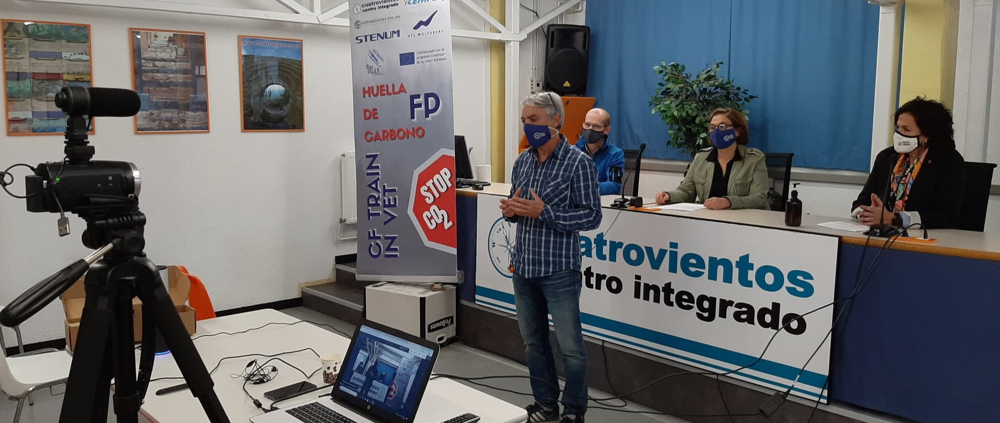
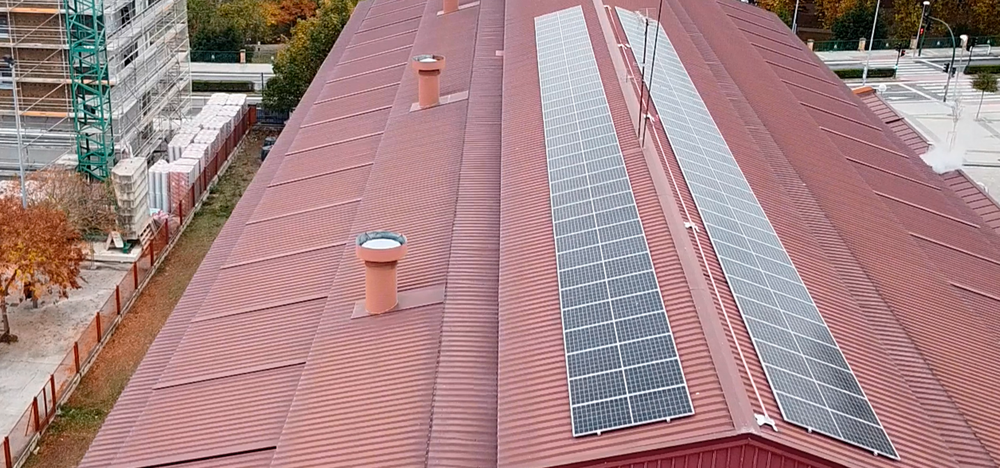
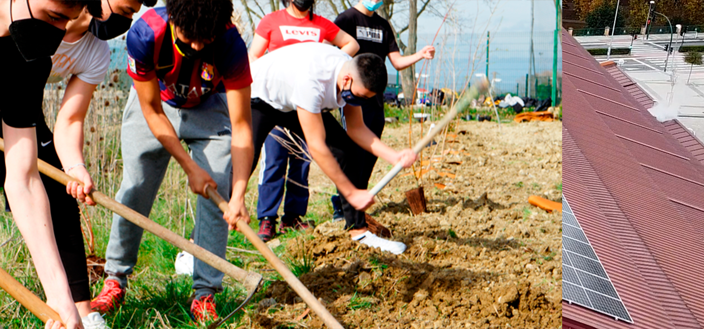
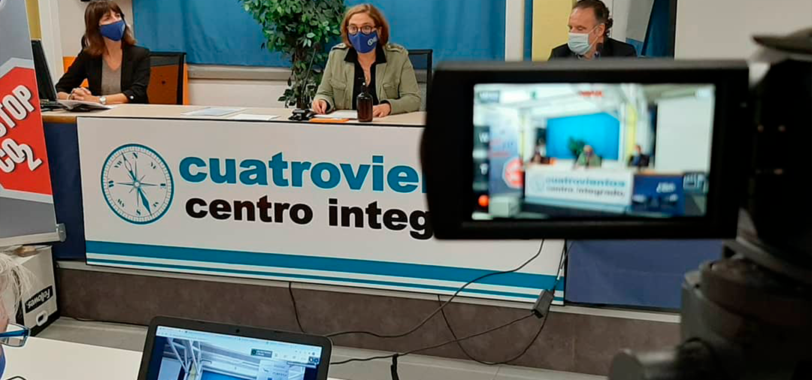
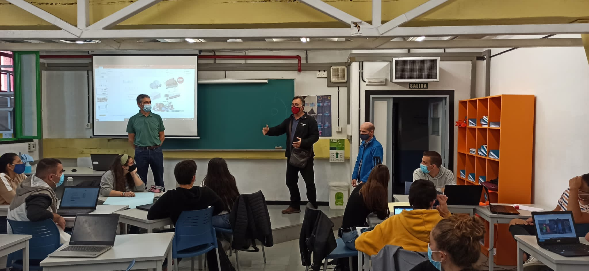

To start the project, around 500 students and 50 teachers took part in a pioneering
event to calculate the CO2 emissions generated by Cuatrovientos , in a collaborative and
simultaneous way. To do this, we had the collaboration of the technician Mikel Baztan, a climate expert,
and the support of the Regional Councillor for the Environment and the Director of
Vocational Training of the Government of Navarre.
With the emission data provided, the pupils organised the calculation by scopes 1, 2 and
3 and together, they thought of reduction measures to face the challenge of becoming a
neutral organization.
This event was supported by the greeting video from the European partners. Video
The result of this workshop was presented in a digital
magazine

Solar panels installation. CO2 reduction
CUATROVIENTOS
As a mitigation action, Cuatrovientos committed to install photovoltaic panels on its roof: seventy modules with a financial investment of 30012,84€ and an estimated
payback period of around 9 years. Since the installation, an avarage of 30% reduction in consumption has been achieved. With the self-production and self-consumption of
electricity, Cuatrovientos will manage to reduce its carbon footprint and carry out its activity in a more sustainable way,
taking a step towards the organisation's Corporate Social Responsibility. The installation has the same environmental effect as the planting of 1282 trees in a year.
This event was supported by the greeting video from the European partners.

Tree Plantation. CO2 Compensation
CUATROVIENTOS
Cuatrovientos signed a green agreement with the local Council of Berriozar . Two hundred trees and bushes were planted on land provided by the council by a group of students
and teachers. The commitment is to repeat the initiative every year in order to compensate the school's carbon dioxide emissions that cannot be reduced and contribute to the
positive consequences of the carbon sequestration over the years. In support of this activity, the teachers of Cuatrovientos made a replica of the tree plantation in the school garden.

Sustainability through glass bottles
HTL WOLFSBERG
Sustainability is an essential part when it comes to CO2 savings. A big problem are plastic bottles and plastic cups,
as they pollute our environment due to the microplastics and the high CO2 emissions during the production process. Another
problem is that plastic bottles and cups are not reusable.

Educational Activity
CENIFER
We compiled information on the mobility of the entire educational community with the help of Special Needs students. They used a QR code so all
the students could access the questionnaire to obtain the data. After the corresponding analysis we informed them of the results. You can see
their opinions in the video.

Our Matura Project
MAX VALIER
The Eurasmus+ project was the incentive for our Matura project. Based on the interesting data we got from the calculation of CO2 emissions, we decided to further explore the topic and go a few steps further.
We brought other schools and some companies on board to get a local comparison and make improvements. The project is accompanied by our subject teacher Prof. Florian Morandell
 activities | ctrainvet erasmus+
activities | ctrainvet erasmus+